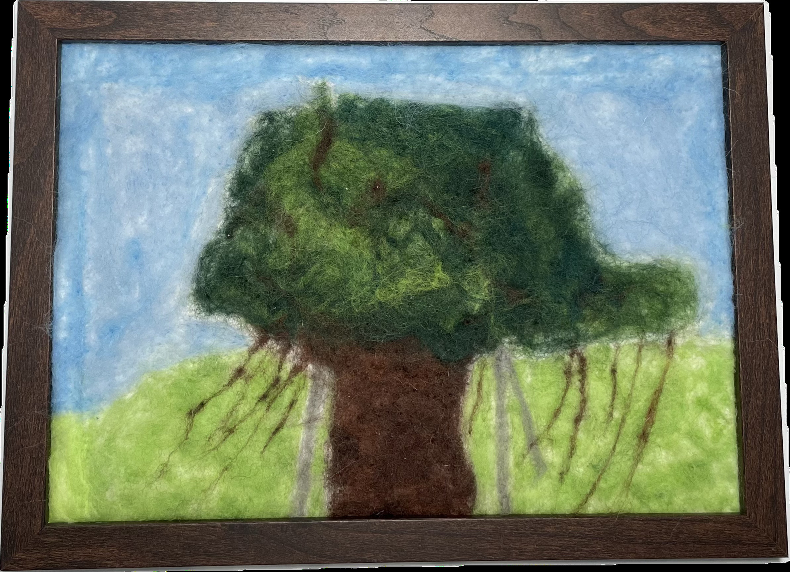

作品名稱：大榕樹
作者姓名：謝昀芸
作品主題：大榕樹
作品敘述：彰女的校園裡有許多不同的樹種，如果將他們擬人化，我認為大榕樹是成熟穩重的耆老，而我為它的特質所著迷，因此選擇它作為我作品的主題。我嘗試用不同的綠色羊毛呈現當陽光灑落在樹葉上的光彩，雖然成品效果不如預期，但我對它的喜愛依舊不減。
There are many different types of trees on the campus of CHGSH. If they were personified, I would see the great banyan tree as a wise and steady elder. I am fascinated by its characteristics, which is why I chose it as the subject of my work. I attempted to use various shades of green wool to capture the way sunlight glows on its leaves. Although the final result did not turn out as expected, my fondness for it remains unchanged.